| test | ggplot2 | master | master.1 |
| abline |  |  | |
| area |  |  | |
| area-fillcolor |  |  | |
| bar-dodge |  |  | |
| bar-stack |  |  | |
| bar-identity |  |  | |
| bar-dates |  | 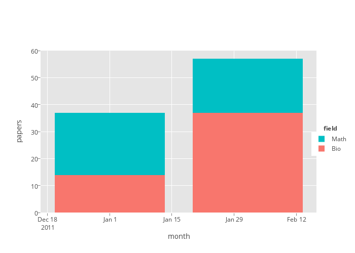 | |
| bar-nocolor |  |  | |
| bar-color |  | 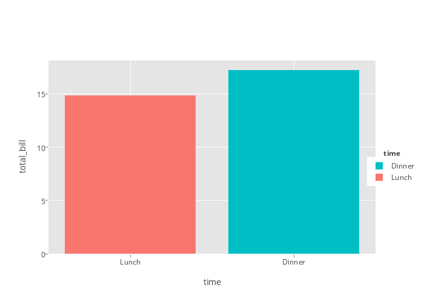 | |
| bar-black-outline |  | | |
| bar-aes-fill-guides-fill-FALSE |  |  | |
| bar-aes-fill-guides-fill-none |  |  | |
| bar-aes-fill-guides-color-none | 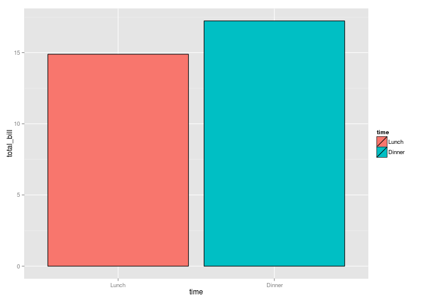 |  | |
| bar-aes-colour-guides-fill-FALSE |  |  | |
| boxplot |  |  | |
| violin |  |  | |
| boxplot-datetime |  |  | |
| bar-factor-category |  |  | |
| bar-category-names |  |  | |
| contour |  | | |
| date-strings |  |  | |
| date-class-Date |  |  | |
| date-irregular-time-series |  |  | |
| density2d |  |  | |
| density |  |  | |
| errorbar-horizontal |  |  | |
| errorbar |  |  | |
| heatmap |  |  | |
| histogram-barmodestack |  |  | |
| histogram-binwidth | 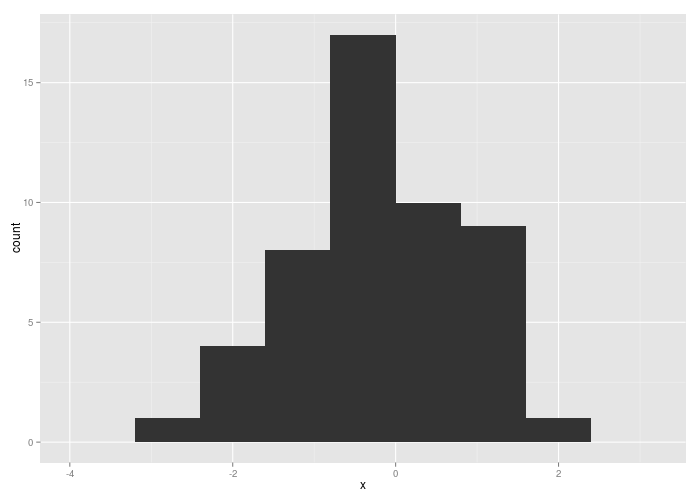 |  | |
| histogram-dates |  |  | |
| histogram-POSIXt-bins |  |  | |
| histogram-Date-bins |  |  | |
| hline |  |  | |
| hline-multiple |  |  | |
| hline-factor |  | 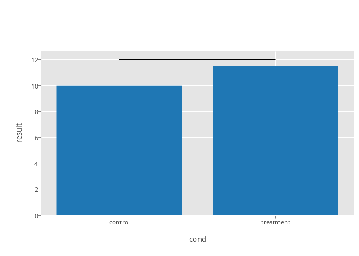 | |
| labels-ggtitle |  |  | |
| labels-ylab |  | 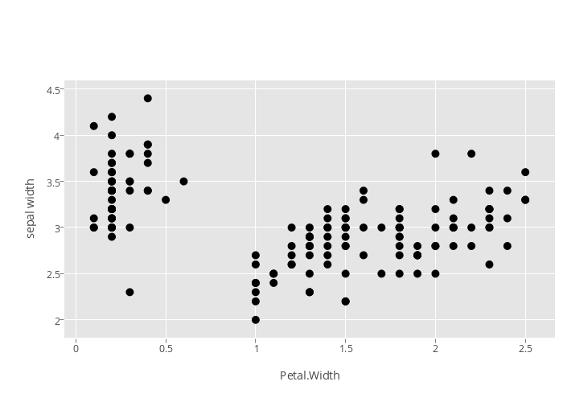 | |
| labels-scale_x_continuous_name |  |  | |
| labels-angles |  |  | |
| legend-iris-position-none |  | 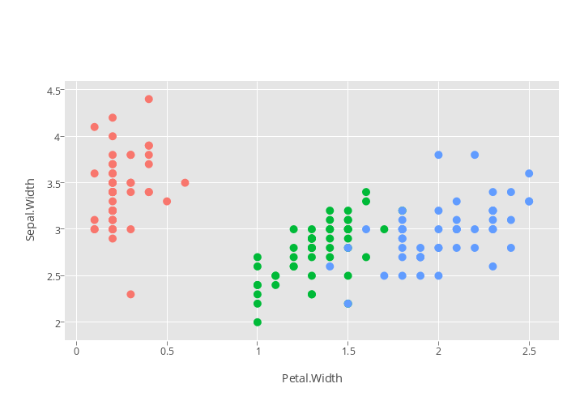 | |
| legend-iris-default |  |  | |
| legend-iris-breaks |  |  | |
| legend-iris-trace-showlegend-FALSE |  |  | |
| legend-iris-2traces-showlegend-FALSE |  |  | |
| legend-iris-3traces-showlegend-FALSE |  |  | |
| linetype-types |  |  | |
| linetype-colors |  |  | |
| names |  | 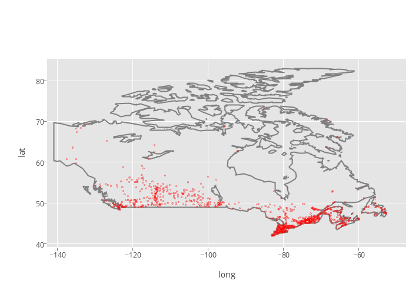 | |
| path-lines-diff-from-paths |  |  | |
| path-colors |  |  | |
| path-colored-groups-stay-together |  |  | |
| path-line-symbols |  | 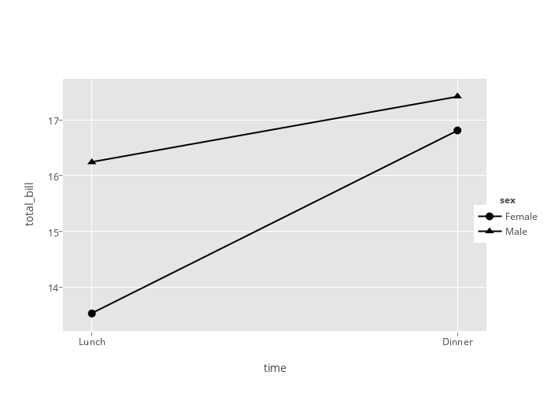 | |
| polygons-filled-polygons |  |  | |
| polygons-springgreen3 |  |  | |
| polygons-springgreen3-lab |  |  | |
| polygons-dashed |  |  | |
| polygons-halloween |  |  | |
| polygons-borders | 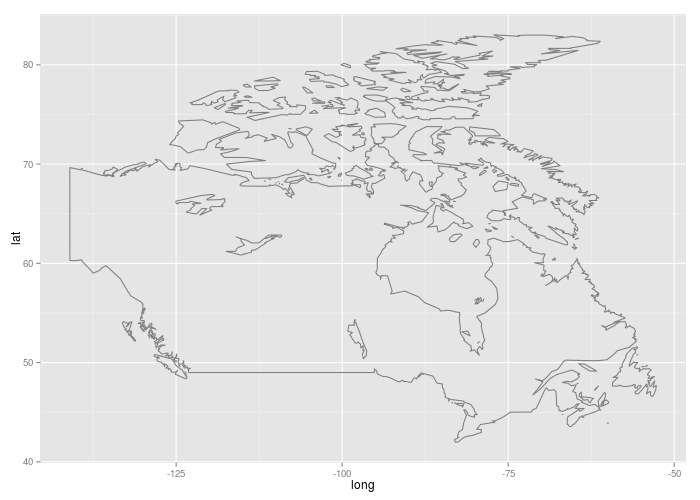 |  | |
| ribbon |  |  | |
| segment |  |  | |
| size-not-a-vector |  |  | |
| size-is-a-vector |  |  | |
| size-global-scaling |  |  | |
| stack |  |  | |
| step-gg.linear-geom_line |  |  | |
| step-gg.linear-geom_path |  |  | |
| step-gg.hv |  |  | |
| step-gg.vh |  | 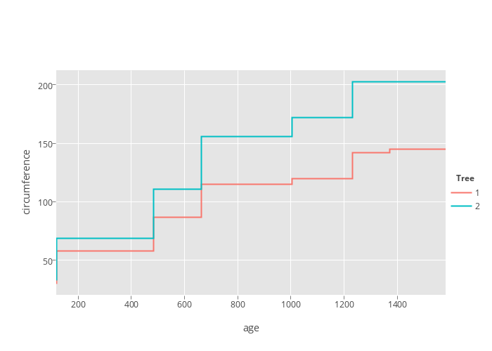 | |
| step-gg.hvh |  |  | |
| step-gg.vhv |  | 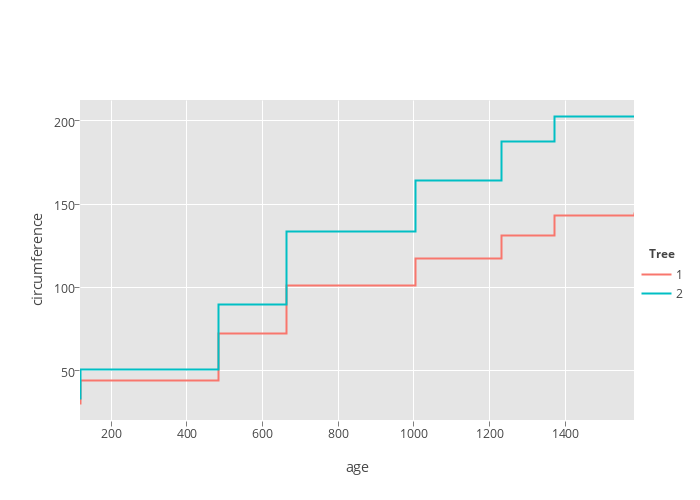 | |
| text |  |  | |
| text-colour | 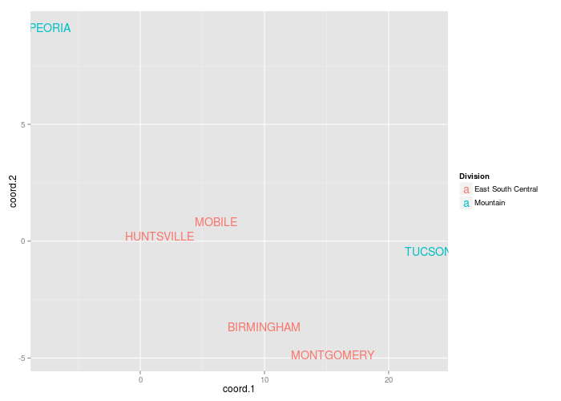 |  | |
| theme-background |  |  | |
| theme-ticks-and-grids |  |  | |
| theme-ticks-default |  |  | |
| theme-zeroline-default |  |  | |
| theme-dashed-grid-lines |  |  | |
| theme-marker-default |  |  | |
| theme-panel-border-1 |  |  | |
| theme-panel-border-2 |  |  | |
| ticks-boxes |  |  | |
| ticks-boxes-facet-grid |  |  | |
| ticks-boxes-scales-free | 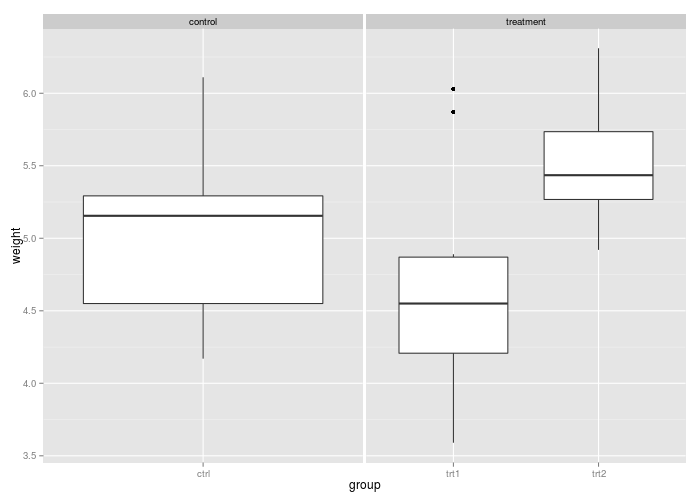 |  | |
| ticks-boxes-space-free |  |  | |
| ticks-flip |  |  | |
| ticks-discrete-order |  |  | |
| ticks-limits-hide |  |  | |
| ticks-limits-gap |  |  | |
| ticks-breaks-nochange |  |  | |
| ticks-breaks-more |  |  | |
| ticks-breaks-less |  |  | |
| ticks-scale-labels |  |  | |
| ticks-hide-ticks-lines-labels |  |  | |
| ticks-hide-ticks-labels |  |  | |
| ticks-ycontinuous-ranges |  |  | |
| ticks-ylim-ranges |  |  | |
| ticks-yreverse-ranges |  |  | |
| ticks-yreverse-limits-ranges |  |  | |
| ticks-ylim-reversed-ranges | 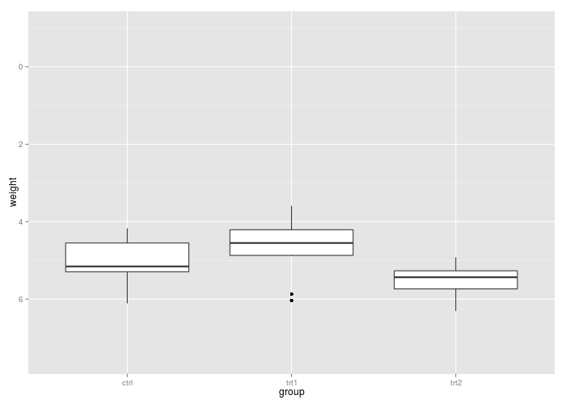 |  | |
| ticks-evenly-spaced-ticks |  |  | |
| ticks-hide-y | 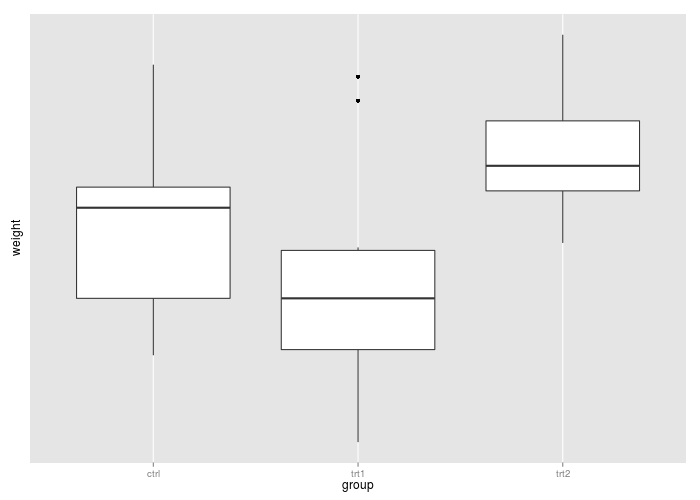 |  | |
| ticks-hide-y-keep-grid |  |  | |
| vline |  |  | |
| vline-multiple |  | 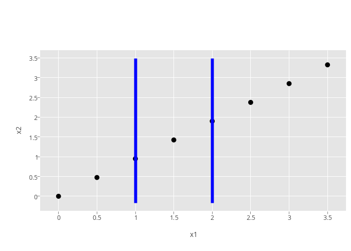 | |
| ylim-one-trace |  | 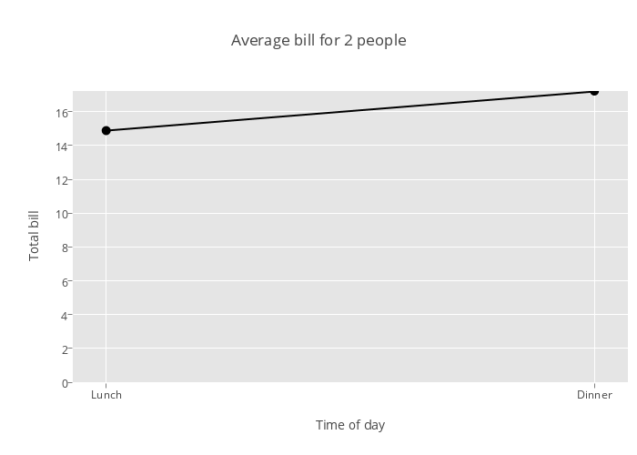 | |